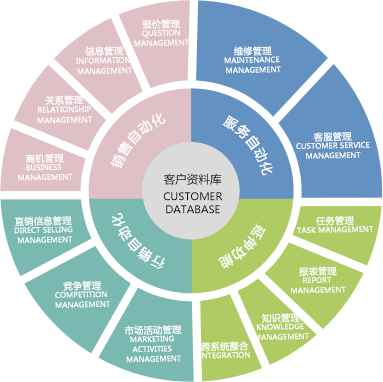

电子商务ERP把传统ERP中的采购、生产、销售、库存管理等物流及资金流模块与电子商务中的网上采购、网上销售、资金支付等模块整合在一起，以电子及电子技术为手段，以商务为核心，打破国家与地区有形无形的壁垒，让企业从传统的注重内部资源管理利用转向注重外部资源管理利用，从企业内的业务集成转向企业间的业务协同。
通过电子商务、进销存供应链、客户关系管理、国际贸易、生产制造、财务等应用模块整合企业业务流、资金流、物流、信息流等，将供应商、制造商、分销商、零售商直到最终用户连成一个整体的功能网链结构模式。提升企业间（特别是企业与供应商之间、企业与客户之间）的数据交换，帮助企业提高整个供应链的竞争力。
对当前的销售点数据进行实时分析，从而帮助该公司及时掌握市场细分、商品销售、库存管理和预测信息，真正实现客户对任何来源的海量数据进行实时分析，完成企业的整个业务流程的管控。
灵活的部署方式，可以根据业务需求的改变，使用不同的预集成的合作伙伴解决方案。这样可以达到根据用户的规模及需求点不同配置系统的目的。
大大缩短了供应链上采购信息从下游传递到上游的时间，物流、资金流、信息流流动速度的加快使得供应链能够在更短的时间内实现价值的增值。
1. 整合内、外部资源；
2. 迅速满足客户个性化需求；
3. 提高客户满意度；
4. 提高成本管理及损益分析的效率；
5. 最新软件架构系统的高度集成。